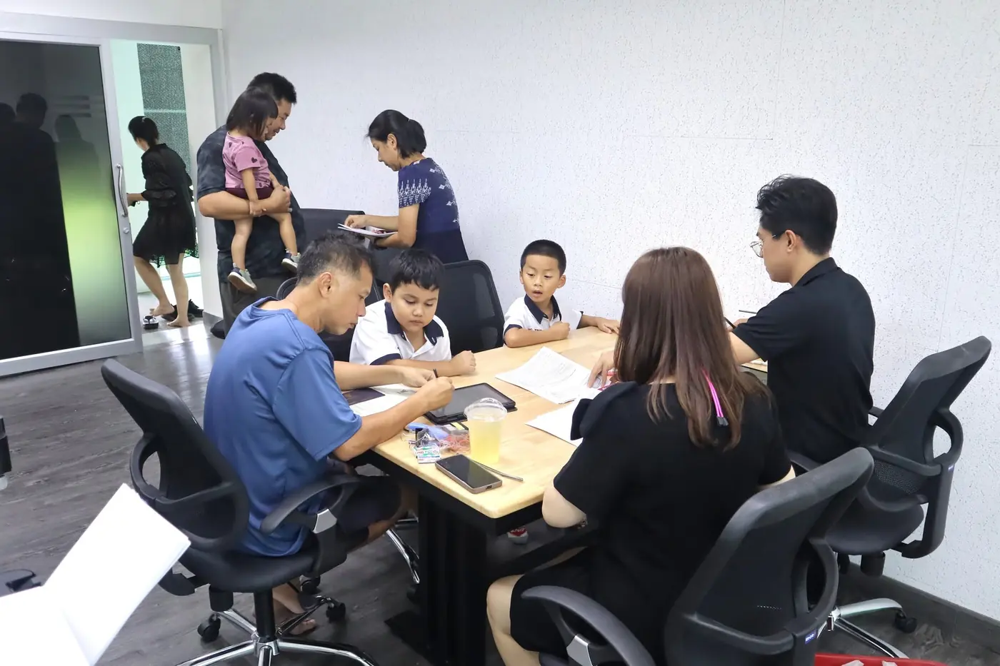

ก้าวแรกThe first stepสู่สาธิตto Satit
ประกาศรับสมัครนักเรียนล่าสุด ปีการศึกษา 2569 รับชั้นอนุบาล 1 ประถมศึกษาปีที่ 1 และประถมศึกษาปีที่ 4The latest notice, for academic year 2026, opened places in Kindergarten 1, Prathom 1 and Prathom 4.

ชั้นที่เปิดรับEntry grades
28 พ.ย. 256828 Nov 2025
ตามประกาศปีการศึกษา 2569Per the 2026 notice
ติดตามประกาศใหม่Watch for the new notice
โทร 032-708623Call +66 32 708 623
สมัครเรียนใน 5 ขั้นApplying in five steps
ติดตามประกาศRead the notice
ดูชั้นที่เปิดรับ คุณสมบัติ และกำหนดการCheck grades, eligibility and dates.
สมัครApply
ยื่นใบสมัครและเอกสารตามที่ประกาศกำหนดSubmit the form and documents.
คัดเลือกSelection
ตามวิธีที่ระบุในประกาศของแต่ละปีAs set out in that year's notice.
ประกาศผลResults
ตรวจสอบรายชื่อตามวันที่กำหนดCheck the list on the set date.
มอบตัวEnrol
รายงานตัวและมอบตัวเป็นนักเรียนRegister as a pupil.
ขั้นตอนโดยทั่วไป รายละเอียดจริงให้ยึดตามประกาศของแต่ละปีGeneral steps; each year's notice is what counts.
ผู้ปกครองมักถามWhat parents ask
ปีนี้เปิดรับชั้นไหนบ้างWhich grades are open?
ประกาศปีการศึกษา 2569 เปิดรับอนุบาล 1, ป.1 และ ป.4 ส่วนปีถัดไปให้ติดตามประกาศใหม่The 2026 notice opened K1, P1 and P4. Watch for next year's notice.
ค่าเล่าเรียนเท่าไรWhat are the fees?
สอบถามโรงเรียนโดยตรงที่ 032-708623Please ask the school on +66 32 708 623.
เยี่ยมชมโรงเรียนก่อนสมัครได้ไหมCan we visit first?
โทรหรืออีเมลนัดหมายกับโรงเรียนได้Call or email the school to arrange a visit.
ติดต่อสอบถามที่ไหนWho do we contact?
032-708623 · satitpbru@mail.pbru.ac.th

ที่มาของข้อมูลSources (2)
- ประกาศรับสมัครนักเรียน ปีการศึกษา 2569 (มหาวิทยาลัยราชภัฏเพชรบุรี)Admissions notice, academic year 2026 (PBRU) · ดูต้นฉบับsource
- หน้าติดต่อโรงเรียนสาธิต (เว็บไซต์ มรภ.เพชรบุรี)Contact page (PBRU website) · ดูต้นฉบับsource